Poner el backend de BajaTrip detrás de un balanceador de carga con tres nodos (un balanceador y dos nodos de aplicación), comprobar que el tráfico se reparte, que cada nodo se identifica, que la ruta /salud revisa la base de datos y que la sesión no depende del nodo. Después se mide el rendimiento con Apache Bench en un nodo solo, con dos algoritmos de balanceo y con una prueba larga.
Se eligió la opción de contenedores Docker: cada nodo es un contenedor con su propia IP fija dentro de la red bajatrip-red (172.28.0.0/24). Los dos nodos de aplicación se construyen con la misma imagen (misma versión del código) y solo cambian en la variable NODO. Los dos usan la misma base MySQL.
| Contenedor | Función | IP | Puerto interno | Puerto en el host |
|---|---|---|---|---|
| bajatrip-balanceador-1 | Balanceador Nginx | 172.28.0.10 | 80 | 8080 |
| bajatrip-app1-1 | Nodo 1 (Node.js) | 172.28.0.11 | 3000 | 8001 |
| bajatrip-app2-1 | Nodo 2 (Node.js) | 172.28.0.12 | 3000 | 8002 |
| bajatrip-db-1 | MySQL compartido | 172.28.0.20 | 3306 | — |
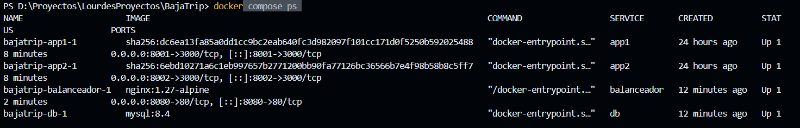
docker compose ps: los cuatro contenedores en ejecución.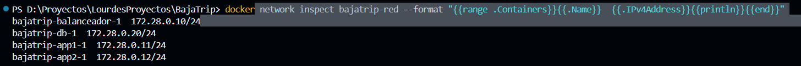
docker network inspect bajatrip-red: nombre e IP de cada contenedor.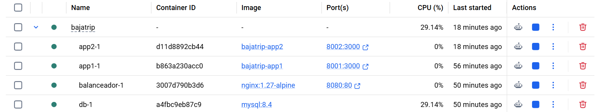
bajatrip y sus puertos.El archivo nginx/balanceo.conf se monta como default.conf del contenedor Nginx:
upstream bajatrip {
# least_conn; ← se activa para el segundo algoritmo
server 172.28.0.11:3000 max_fails=2 fail_timeout=10s;
server 172.28.0.12:3000 max_fails=2 fail_timeout=10s;
}
server {
listen 80;
location = /favicon.ico { return 204; }
location / {
proxy_pass http://bajatrip;
proxy_set_header Host $http_host;
proxy_set_header X-Real-IP $remote_addr;
proxy_set_header X-Forwarded-For $proxy_add_x_forwarded_for;
proxy_set_header X-Forwarded-Proto $scheme;
proxy_connect_timeout 2s;
proxy_next_upstream error timeout http_502 http_503 http_504;
add_header X-Nodo $upstream_addr always;
}
}
max_fails=2 fail_timeout=10s saca de la rotación a un nodo que falla dos veces, y proxy_next_upstream reenvía la petición al otro nodo. proxy_connect_timeout 2s evita esperar 60 s cuando un nodo no contesta. Se usa $http_host para conservar el puerto 8080 en los enlaces.
Cada nodo agrega la cabecera X-Servidor con el valor de NODO, y el balanceador agrega X-Nodo con la dirección del nodo que atendió. Seis peticiones seguidas a /salud se reparten entre los dos nodos:
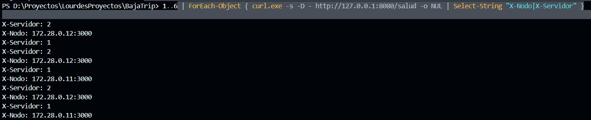
/salud por el balanceador, atendidas por el nodo 1 (172.28.0.11) y el nodo 2 (172.28.0.12)./salud que revisa la base de datos/salud ejecuta una consulta real contra MySQL. Con la base detenida (docker compose stop db), el nodo responde 503 Service Unavailable con {"nodo":"1","bd":"caida"}, no un 200 fijo. El balanceador trata ese 503 como fallo (proxy_next_upstream http_503).
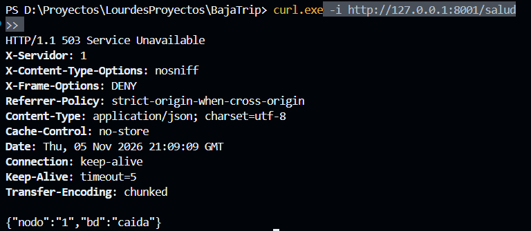
/salud del nodo 1 con la base de datos detenida.Los dos nodos tienen DB_HOST=172.28.0.20, así que lo que se guarda desde un nodo lo lee el otro. Los datos persisten en el volumen datos.
Se usa un almacén compartido: la cookie bt_sesion (HttpOnly, SameSite=Lax) solo guarda un identificador, y la sesión vive en la tabla sesiones de la base compartida. Cualquier nodo que reciba la cookie busca ese identificador en MySQL, así que la sesión no se pierde cuando el balanceador cambia de nodo.
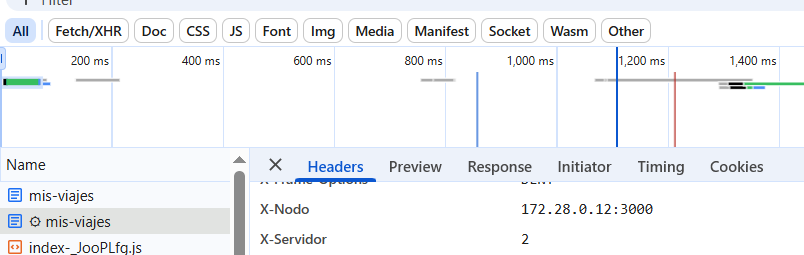
mis-viajes por el balanceador; F12 › Red muestra X-Nodo y X-Servidor.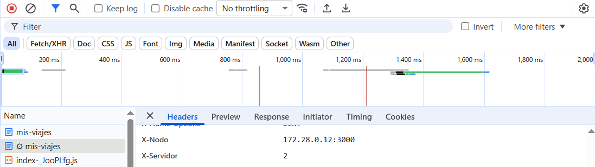
mis-viajes con los encabezados de respuesta del balanceador.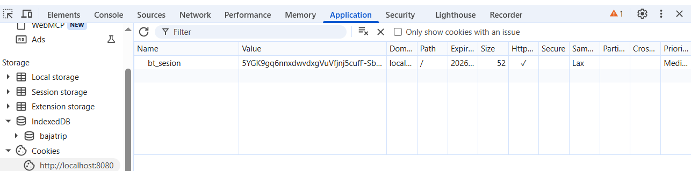
bt_sesion en http://localhost:8080.Apache Bench se ejecutó desde un contenedor httpd:2.4-alpine conectado a la misma red bajatrip-red, con -l para aceptar respuestas de tamaño variable. Se usaron las mismas -n 1000 -c 20 en los escenarios comparables.
# Un nodo solo docker run --rm --network bajatrip-red httpd:2.4-alpine ab -l -n 1000 -c 20 http://172.28.0.11:3000/ # A través del balanceador docker run --rm --network bajatrip-red httpd:2.4-alpine ab -l -n 1000 -c 20 http://172.28.0.10/ # Prueba larga docker run --rm --network bajatrip-red httpd:2.4-alpine ab -l -n 20000 -c 20 http://172.28.0.10/
| Escenario | -n / -c | Por segundo | 50 % | 90 % | 99 % | 100 % | Fallidas |
|---|---|---|---|---|---|---|---|
| Un nodo solo | 1000 / 20 | 237.91 | 59 ms | 87 ms | 759 ms | 981 ms | 0 |
| Balanceador · round robin (corrida 1) | 1000 / 20 | 851.56 | 23 ms | 40 ms | 71 ms | 97 ms | 0 |
| Balanceador · round robin (corrida 2) | 1000 / 20 | 763.96 | 23 ms | 48 ms | 102 ms | 118 ms | 0 |
| Balanceador · least_conn | 1000 / 20 | 852.82 | 19 ms | 39 ms | 85 ms | 101 ms | 0 |
| Prueba larga · least_conn | 20000 / 20 | 1210.94 | 13 ms | 30 ms | 64 ms | 135 ms | 0 |
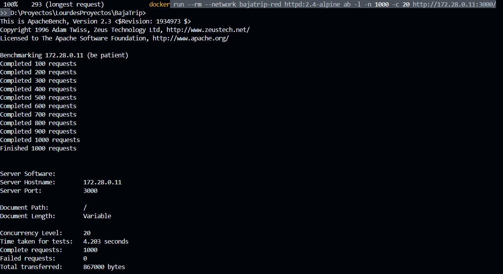
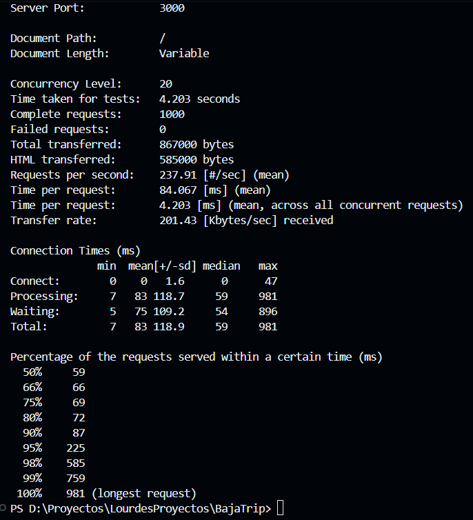
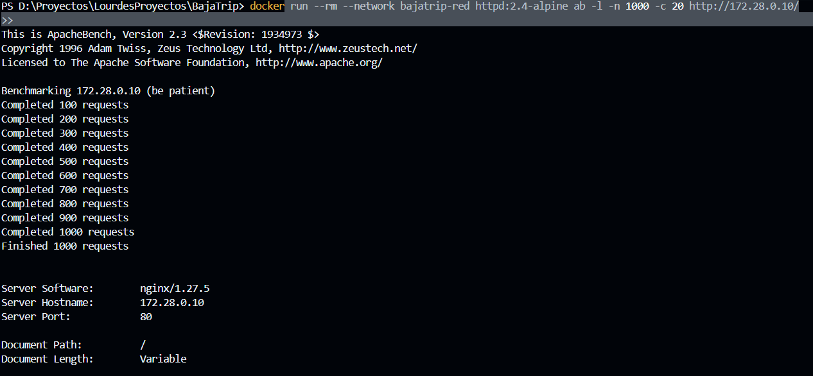
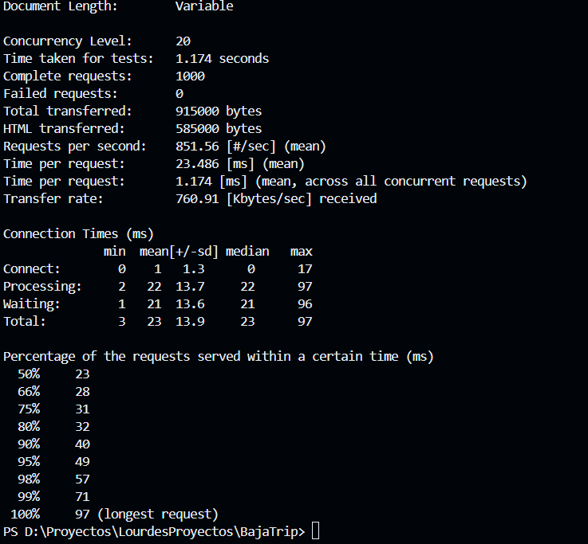
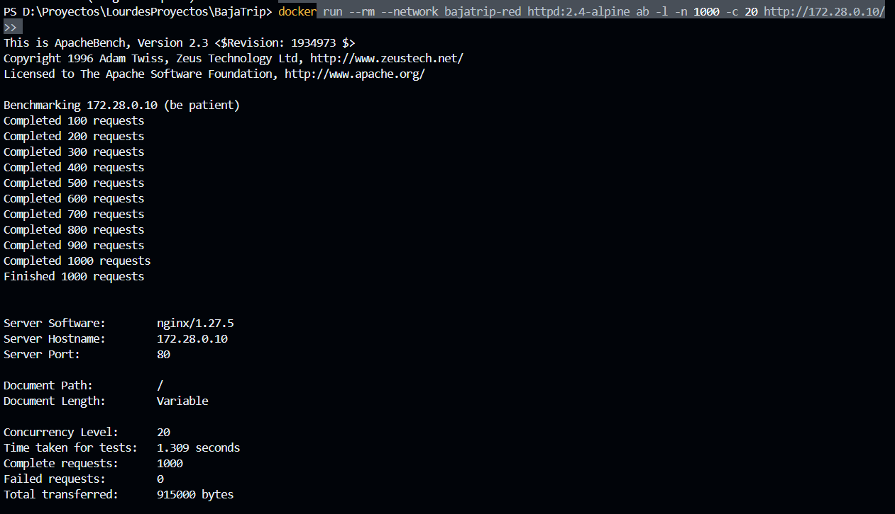
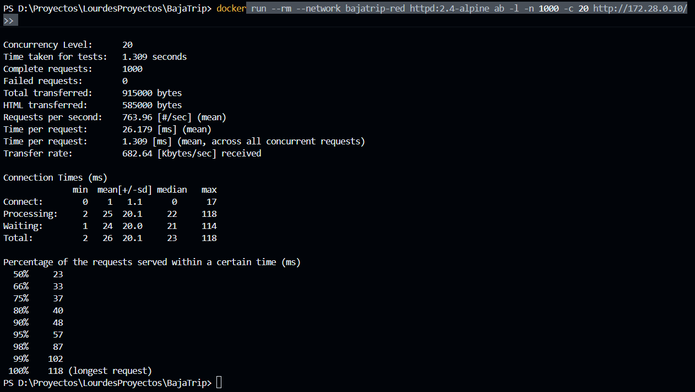
Se quitó el # de least_conn; en balanceo.conf y se reinició el balanceador con docker compose restart balanceador.
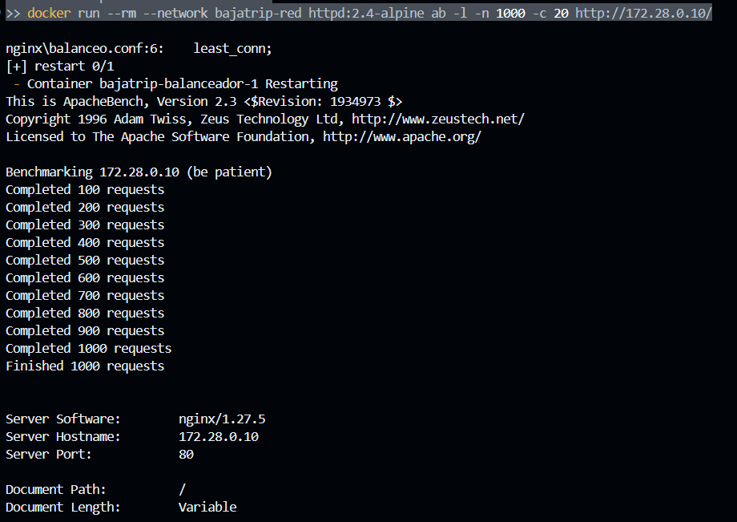
least_conn; activo, reinicio del balanceador y resumen de la prueba.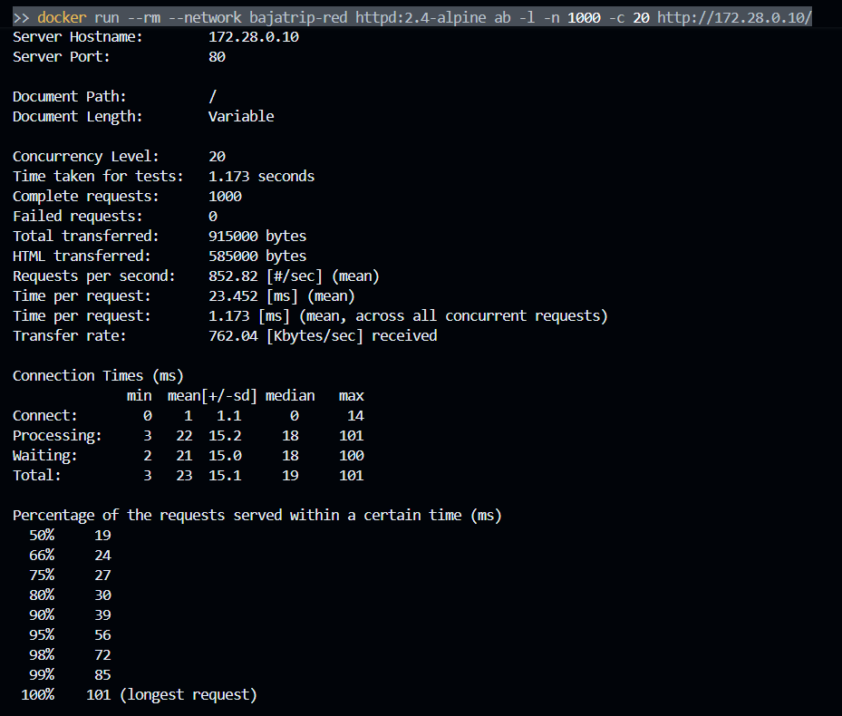
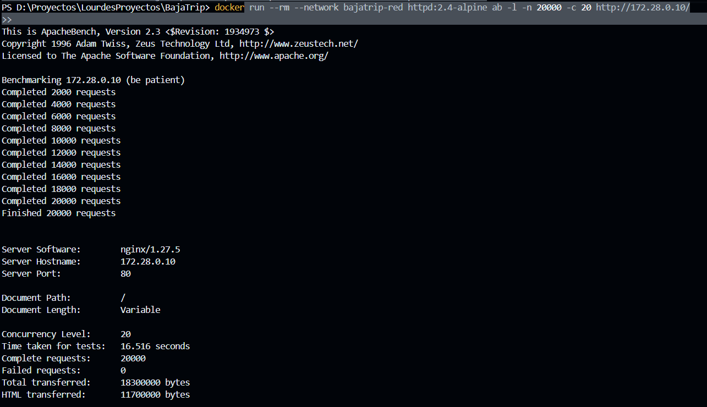
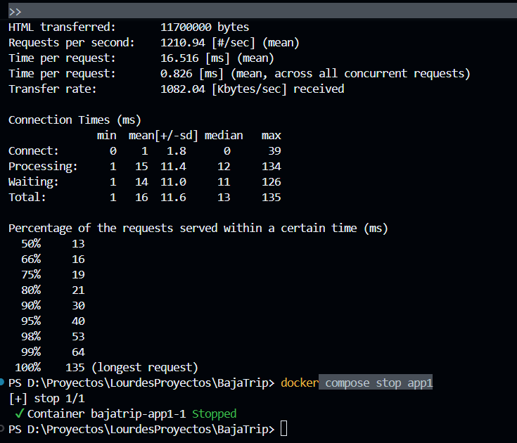
docker compose stop app1.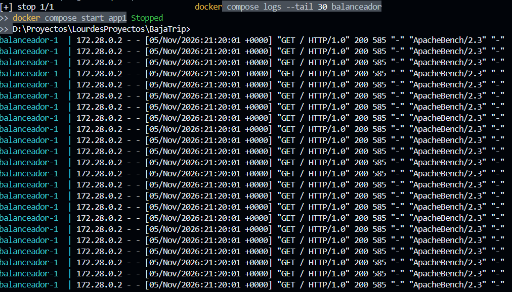
docker compose logs --tail 30 balanceador).docker compose stop app1 se ejecutó cuando Apache Bench ya había terminado las 20 000 peticiones (captura 18). Por eso la prueba refleja al conjunto con los dos nodos activos: 0 fallidas y 135 ms en la petición más lenta. La bitácora muestra solo respuestas 200. Con la configuración usada, al caer un nodo durante la prueba Nginx espera hasta 2 s (proxy_connect_timeout), reintenta la petición en el otro nodo y, tras dos fallos, deja de enviarle tráfico durante 10 s.¿Mejoró con el balanceador? Sí. Un nodo solo atendió 237.91 peticiones por segundo; con el balanceador y los dos nodos fueron entre 763.96 y 852.82, entre 3.2 y 3.6 veces más. La mejora más grande está en los usuarios a los que peor les fue: el percentil 99 bajó de 759 ms a entre 71 y 102 ms, y la petición más lenta de 981 ms a menos de 120 ms. La mediana bajó de 59 ms a 19–23 ms. Los cuatro contenedores corren en la misma laptop y comparten procesador, así que con nodos en equipos distintos se esperaría una diferencia todavía mayor.
¿Qué algoritmo se comportó mejor? least_conn quedó ligeramente arriba: 852.82 peticiones por segundo contra 851.56 y 763.96 de round robin (807.76 de promedio), y una mediana de 19 ms contra 23 ms. Con dos nodos iguales y peticiones parecidas la diferencia es pequeña. least_conn ayuda más cuando algunas peticiones tardan mucho más que otras, porque manda la siguiente al nodo con menos conexiones abiertas. En la prueba larga con least_conn el conjunto llegó a 1210.94 peticiones por segundo sin fallas.
¿Cuánto tardó en sacar al nodo caído? No quedó medido: el nodo 1 se apagó cuando la prueba larga ya había terminado, así que no hubo tráfico contra el nodo caído. Por la configuración, el tiempo máximo esperado para una petición afectada es de unos 2 s (proxy_connect_timeout 2s), después de los cuales Nginx la reintenta en el nodo 2.
Se cumplieron los requisitos comunes: misma imagen en los dos nodos, una sola base MySQL, identificación por X-Servidor y X-Nodo, /salud que responde 503 cuando la base no contesta y sesión guardada en la base compartida.